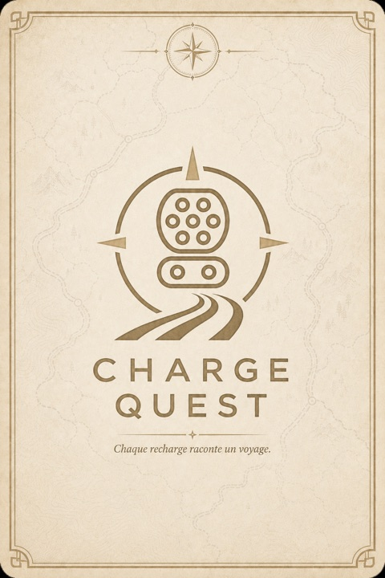
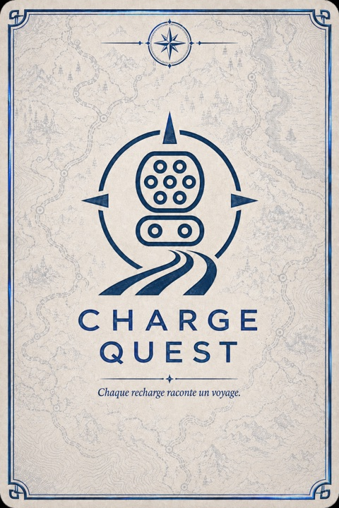
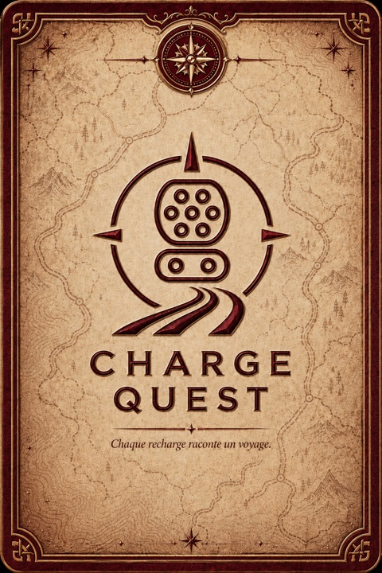
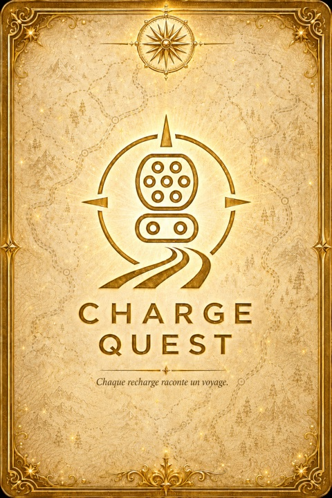

Charge Quest
Chaque recharge raconte un voyage. Chaque station rapide de France porte une carte illustrée, inspirée du lieu, de son patrimoine et de son ambiance. Pour la révéler, un seul moyen : y être vraiment.
Bientôt sur l'App StoreQuatre raretés
Une collection qui se mérite
273 cartes à travers toutes les régions de France. Quatre raretés — Commune, Rare, Épique, Légendaire — reconnaissables à leur dos avant même la découverte. On ne les achète pas, on ne les échange pas : on va les chercher, sur la route.




Un carnet de voyage
Vos cartes prennent place dans un carnet élégant, région par région. À chaque découverte, attachez un souvenir : une photo, une note, l'humeur du moment. Votre collection devient la mémoire de vos trajets.
Explorez
La carte de France affiche toutes les stations et les cartes qui vous attendent. Arrivé sur place, appuyez sur « Je suis sur place » : votre présence est vérifiée, la carte se révèle.
Votre vie privée, d'abord
Aucun compte requis. Aucune donnée collectée. Vos souvenirs et votre progression restent sur votre iPhone. Votre position n'est consultée qu'à l'instant où vous validez votre présence, puis oubliée — jamais enregistrée, jamais transmise.